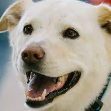

Dogs for adoption!
Are you ready to adopt your new best friend? These are the doggies we have in our refuge. They are looking for a new home!

Meli thing that usually barks a lot, but only when see strangers! After a while, she gets used to them!

Pinky became a meme! Are you ready to have a meme dog? Also she loves walks, this one is a happy one!

White is a very warm a fluffly one! Do you like fluffy dogs? He will give you lots of love... and licks hehe!

Kimmy is a baby! She is a very lovely dog! Also very playful! Are you ready to play some games with her?
Rocky is a veteran! He enjoys short walks and is a very peaceful dog. If you want a calm dog, Rocky is the one!
Are you ready for a puppy? Her name is Chiki! She is ready to explore this wordl and have lots of game in the yard!!
Cream is a ver active one! He likes to chase his tail a lot! Get ready to see funny scenes from this cutie!